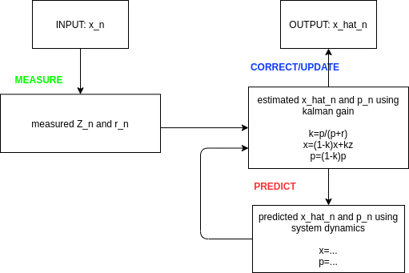
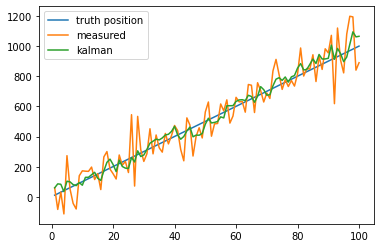

Kalman Filter
Table of Contents
1. Kalman Filter
https://www.kalmanfilter.net/CN/default_cn.aspx
https://stackoverflow.com/questions/43377626/how-to-use-kalman-filter-in-python-for-location-data
https://www.bilibili.com/video/BV1TW411N7Hg/
http://www.bzarg.com/p/how-a-kalman-filter-works-in-pictures/
1.1. Overview
- \(K_n=\frac{p_{n-1}}{p_{n-1}+r_{n}}\)
- \(p_n=(1-K_n)p_{n-1}\)
- \(\hat{x}_n=(1-K_n)\hat{x}_{n-1}+K_nZ_n\)
- \(\hat{x}_n = \hat{x}_{n-1}\)
- \(p_n = p_{n-1}\)

1.1.1. 初始化
kalman filter update 时需要的前一时刻的数据, 包含:
- \(p_{n-1}\) predicted variance
- \(X_{n-1}\) predicted state
1.1.2. measure
通过 measure 获得:
- \(r_n\) measured variance
- \(Z_n\) measured state
1.1.3. correct
通过 measured 来更正 predicted
- 通过公式 1 计算 \(K_n\)
- 通过公式 2 计算 \(p_n\)
- 通过公式 3 计算 \(\hat{x}_n\)
1.1.4. predict
根据系统的 dynamics 预测 x, p
若系统是 constant dynamics, 则不需要 predict, 直接 \(x_{n}=x_{n-1}\)
1.2. Example
1.2.1. constant dynamics
import numpy as np import matplotlib.pyplot as plt t = np.arange(50) position = np.ones(50) STD_POSITION = 10 poisy_position = position + np.random.normal(0, STD_POSITION, size=(position.shape[0])) plt.plot(t, position, label="truth position") plt.plot(t, poisy_position, label="measured") predicts = [poisy_position[0]] position_predict = predicts[0] p = 100 r = STD_POSITION ** 2 for i in range(1, 50): k = p / (p + r) position_predict = position_predict * (1 - k) + poisy_position[i] * k p = (1 - k) * p predicts.append(position_predict) plt.plot(t, predicts, label="kalman") plt.legend() plt.show()

1.2.2. non-constant dynamics
import numpy as np import matplotlib.pyplot as plt t = np.linspace(1, 100, 100) a = 5 position = 10 * t + 1 STD_POSITION = 100 STD_IMU = 30 poisy_position = position + np.random.normal(0, STD_POSITION, size=(t.shape[0])) plt.plot(t, position, label="truth position") plt.plot(t, poisy_position, label="measured") predicts = [poisy_position[0]] position_predict = predicts[0] p = 0 r = STD_POSITION ** 2 for i in range(1, 100): # ----------measure dv = (position[i] - position[i - 1]) + np.random.normal(0, STD_IMU) # ----------predict # 根据 dynamics 来更新 position_predict 和 p position_predict = position_predict + dv # aX+bY 仍是正常分布, 且方差为 a^2*variance(X) + b^2*variance(Y) p += STD_IMU ** 2 # ----------update k = p / (p + r) position_predict = position_predict * (1 - k) + poisy_position[i] * k p = (1 - k) * p predicts.append(position_predict) plt.plot(t, predicts, label="kalman") plt.legend() plt.show()

1.3. 多维 kalman filter
以一个在一维空间里匀速运动的小车为例:
- z,x 变为 2x1 矩阵 [[x],[v]]
- 需要一个 F 描述 dynamics, 设 dynamics 为: x = x+v*dt, v=v, 则 F = [[1,dt],[0,1]]
- p,r 变为 2x2 矩阵, 是一个关于 x,v 的协方差矩阵, 例如 r=[[A,0],[0,B]], 表示 x 方差为 A, v 的方差为 B. x,v 不相关, 协方差为 0
相应的五个公式变为:
https://www.kalmanfilter.net/multiSummary.html
- \(K_n=P_nH^T(HP_nH^T+R)^{-1}\)
- \(P_n=(I-K_nH)P_n(I-K_nH)^T+K_nR_n{K_n}^T\)
- \(\hat{x}_n=\hat{x}_n+K_n(Z_n-H\hat{x}_n)\)
- \(\hat{x}_{n}=F\hat{x}_{n-1}\)
- \(P_n=FP_{n}F^T+Q\)
涉及到 P, R 的公式都是 \(APA^T\) 的形式, 因为当 X, Y 是不相关的正态分布是, \(aX+bY\) 也是正态分布, 且其方差为 \(a^2\delta^2_X+b^2\delta^2_Y\)
其中 H 为 observation matrix, 用来处理 predict 中某些数据不能 measure 的情况 跟踪鼠标
import numpy as np import matplotlib.pyplot as plt N = 100 t = np.linspace(1, N, N) position = 2 * t + 1 STD_POSITION = 10 STD_IMU = 3 noisy_position = position + np.random.normal(0, STD_POSITION, size=N) noisy_speed = (position[1:] - position[:-1]) + np.random.normal(0, STD_IMU, size=N - 1) plt.plot(t, position, label="truth position") plt.plot(t, noisy_position, label="measured") predicts = [0] # 2x1 # X=[[x],[v]] # 2x2 # F=[[1,dt],[0,1]] # 2x2 # P=[[1,0],[0,1]] # 2x2 # r=[[STD_POSITION**2,0],[0,STD_IMU**2]] # dt = 1 X = np.array([[0], [0]]) P = [[1, 0], [0, 1]] # F,R 是我们用 kalman filter 时必需提供的两个参数, F 代表 dynamics 参数, R 代表 # correct 参数 F = np.array([[1, dt], [0, 1]]) R = [[STD_POSITION ** 2, 0], [0, STD_IMU ** 2]] for i in range(1, N): # measure Z = [ [noisy_position[i]], [(position[i] - position[i - 1]) + np.random.normal(0, STD_IMU)], ] # predict X = F @ X P = F @ P @ F.T # update K = P @ np.linalg.inv(P + R) X = X + K @ (Z - X) P = (np.eye(2) - K) @ P @ (np.eye(2) - K).T + K @ R @ K.T predicts.append(X[0][0]) plt.plot(t, predicts, label="kalman") plt.legend() plt.show()

1.4. cv2.KalmanFilter
1.4.1. 匀速运动的小车
import numpy as np import matplotlib.pyplot as plt import cv2 N = 100 t = np.linspace(1, N, N) position = 3 * t + 1 STD_POSITION = 10 STD_IMU = 3 noisy_position = position + np.random.normal(0, STD_POSITION, size=N) noisy_speed = (position[1:] - position[:-1]) + np.random.normal(0, STD_IMU, size=N - 1) plt.plot(t, position, label="truth position") plt.plot(t, noisy_position, label="measured") predicts = [0] dt = 1 F = np.array([[1, dt], [0, 1]], np.float32) R = np.array([[STD_POSITION ** 2, 0], [0, STD_IMU ** 2]], np.float32) filter = cv2.KalmanFilter(2, 2, 0) # F filter.transitionMatrix = F # R filter.measurementNoiseCov = R # H filter.measurementMatrix = np.eye(2, dtype=np.float32) for i in range(1, N): # measure Z = np.array( [ noisy_position[i], (position[i] - position[i - 1]) + np.random.normal(0, STD_IMU), ], np.float32, ) # predict filter.predict() # corrent output = filter.correct(Z) predicts.append(output[0]) plt.plot(t, predicts, label="kalman") plt.legend() plt.show()

1.4.2. 跟踪鼠标
#!/usr/bin/env python3 import numpy as np import cv2 class Stabilizer: """Using Kalman filter as a point stabilizer.""" def __init__(self, state_num=4, measure_num=2, cov_process=0.0001, cov_measure=0.1): # Store the parameters. # 隐藏状态 # X 为 [[x],[y],[v_x],[v_y]] self.state_num = state_num # 观测状态 # Z 为 [[x],[y]] self.measure_num = measure_num # The filter itself. self.filter = cv2.KalmanFilter(state_num, measure_num, 0) # 转移矩阵: FX+Q # F self.filter.transitionMatrix = np.array( [[1, 0, 1, 0], [0, 1, 0, 1], [0, 0, 1, 0], [0, 0, 0, 1]], np.float32 ) # Q self.filter.processNoiseCov = np.eye(4, dtype=np.float32) * cov_process # 观测矩阵: HX+R # H, 由于 measure 信息里只有 x,y, 不包括 v_x, v_y, 所以需要用 H 把 x 中 # 的后两个数据 mask 掉 self.filter.measurementMatrix = np.eye(2, 4, dtype=np.float32) # R self.filter.measurementNoiseCov = np.eye(2, dtype=np.float32) * cov_measure def update(self, measurement): self.filter.predict() self.filter.correct(measurement) # statePost 是 correct 之后的 state # statePre 是 predict 之后, corrent 之前的 state def main(): global mp mp = np.array((2, 1), np.float32) # measurement def onmouse(k, x, y, s, p): global mp mp = np.array([[np.float32(x)], [np.float32(y)]]) cv2.namedWindow("kalman") cv2.setMouseCallback("kalman", onmouse) kalman = Stabilizer(4, 2) frame = np.zeros((768, 1024, 3), np.uint8) while True: kalman.update(mp) state = kalman.filter.statePost cv2.circle(frame, (int(mp[0]), int(mp[1])), 2, (255, 0, 0), -1) cv2.circle(frame, (int(state[0]), int(state[1])), 2, (0, 0, 255), -1) cv2.imshow("kalman", frame) k = cv2.waitKey(30) & 0xFF if k == 27: break if __name__ == "__main__": main()
1.5. HMM vs. Kalman Filter
实际上，卡尔曼滤波与隐马尔可夫类似. HMM 的离散高斯动态模型, 而 kalman filter 是连续高斯动态模型. HX+R 相当于观测矩阵, FX+Q 相当于转移矩阵。卡尔曼滤波是给定观测状态序列 Z 求概率最大的隐含状态序列 X